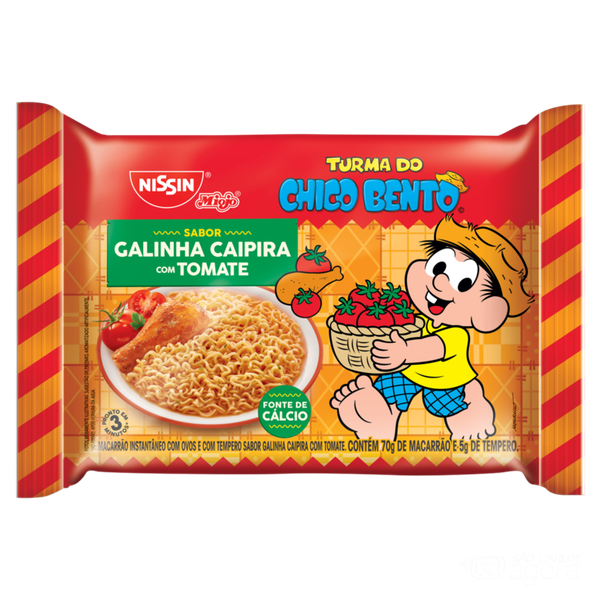

Miojo Tradicional

Ingredientes:
- 1 pacote de miojo
- Água (cerca de 400-500 ml por pacote)
Modo de Preparo:
- Coloque água na panela até cobrir o fundo (meio copo ou 400-500 ml).
- Leve ao fogo alto até ferver borbulhante.
- Adicione o bloco de miojo inteiro, sem quebrar.
- Cozinhe por 2-3 minutos mexendo até amolecer e soltar.
- Escorra quase toda a água, deixando só um pouco úmido.
- Abra o sachê de tempero e misture bem no miojo quente.